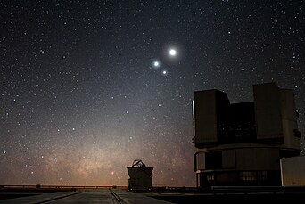

Langit malam yang gelap dan jauh dari lampu-lampu yang terang adalah kondisi yang ideal untuk melakukan pengamatan bintang. Pemandangan langit malam di Observatorium Paranal, Chili. Tiga objek yang tampak terang di sini adalah Bulan (atas), Venus (kiri), dan Jupiter (kanan). Astronomi (bahasa Yunani: ?st????µ?a, translit. astronomía,[1] dari ástron 'bintang' dan nómos 'hukum'), juga disebut ilmu bintang atau ilmu falak,[2] adalah ilmu alam yang mempelajari benda langit dan fenomena alam yang terjadi di luar Bumi, termasuk fenomena di atmosfer atas Bumi yang berasal dari luar angkasa seperti meteor dan aurora.[3] Ilmu ini secara pokok mempelajari berbagai sisi dari objek langit seperti asal usul, sifat fisika/kimia, meteorologi, dan gerak serta bagaimana pengetahuan akan benda-benda tersebut menjelaskan pembentukan dan perkembangan alam semesta. Astronomi sebagai ilmu adalah salah satu yang tertua, sebagaimana diketahui dari artefak-artefak astronomis yang berasal dari era prasejarah; misalnya monumen-monumen dari Mesir dan Nubia, atau Stonehenge yang berasal dari Britania. Orang-orang dari peradaban-peradaban awal semacam Babilonia, Yunani Kuno, Tiongkok, India, dan Maya juga didapati telah melakukan pengamatan yang metodologis atas langit malam. Meskipun memiliki sejarah yang panjang, astronomi baru dapat berkembang menjadi cabang ilmu pengetahuan modern melalui penemuan teleskop. Cukup banyak cabang-cabang ilmu yang pernah turut disertakan sebagai bagian dari astronomi, dan apabila diperhatikan, sifat cabang-cabang ini sangat beragam: dari astrometri, pelayaran berbasis angkasa, astronomi observasional, sampai dengan penyusunan kalender dan astrologi. Meski demikian, dewasa ini astronomi profesional dianggap identik dengan astrofisika.
Pada abad ke-20, astronomi profesional terbagi menjadi dua cabang, yaitu astronomi observasional; Studi astronomi yang melibatkan pengumpulan data dari pengamatan atas benda-benda langit, yang kemudian akan dianalisis menggunakan prinsip-prinsip dasar fisika, dan astronomi teoretis; Studi astronomi yang terpusat pada upaya pengembangan model-model komputer/analitis guna menjelaskan sifat-sifat benda-benda langit serta fenomena-fenomena alam lainnya. Adapun kedua cabang ini bersifat komplementer; Astronomi teoretis berusaha untuk menerangkan hasil-hasil pengamatan astronomi observasional, dan astronomi observasional akan mencoba untuk membuktikan kesimpulan yang dibuat oleh astronomi teoretis.
Astronomi harus dibedakan dari astrologi, yang merupakan kepercayaan bahwa nasib dan urusan manusia berhubungan dengan letak benda-benda langit seperti bintang atau rasinya. Memang betul bahwa dua bidang ini memiliki asal usul yang sama, namun pada saat ini keduanya sangat berbeda.[4] Leksikologi Penggunaan istilah "astronomi" dan "astrofisika" Secara umum baik "astronomi" maupun "astrofisika" boleh digunakan untuk menyebut ilmu yang sama.[5][6][7][8] Apabila merujuk pada definisi KBBI, "astronomi" adalah ilmu tentang "matahari, bulan, bintang, dan planet-planet lain"[2] sedangkan "astrofisika" adalah cabang astronomi yang mempelajari tentang "perilaku, sifat fisik, serta dinamika benda dan fenomena langit."[9]
Dalam kasus-kasus tertentu, misalnya pada pembukaan buku The Physical Universe oleh Frank Shu, "astronomi" boleh dipergunakan untuk sisi kualitatif dari ilmu ini, sedang "astrofisika" untuk sisi lainnya yang lebih berorientasi fisika.[10] Namun, penelitian-penelitian astronomi modern kebanyakan berurusan dengan topik-topik yang berkenaan dengan fisika, sehingga bisa dianggap bahwa astronomi modern adalah astrofisika.[5]
Banyak badan-badan penelitian yang, dalam memutuskan menggunakan istilah yang mana, hanya bergantung dari apakah secara sejarah mereka berafiliasi dengan departemen-departemen fisika atau tidak.[7] Astronom-astronom profesional sendiri banyak yang memiliki gelar di bidang fisika.[8] Untuk ilustrasi lebih lanjut, salah satu jurnal ilmiah terkemuka pada cabang ilmu ini bernama Astronomy and Astrophysics (Astronomi dan Astrofisika).